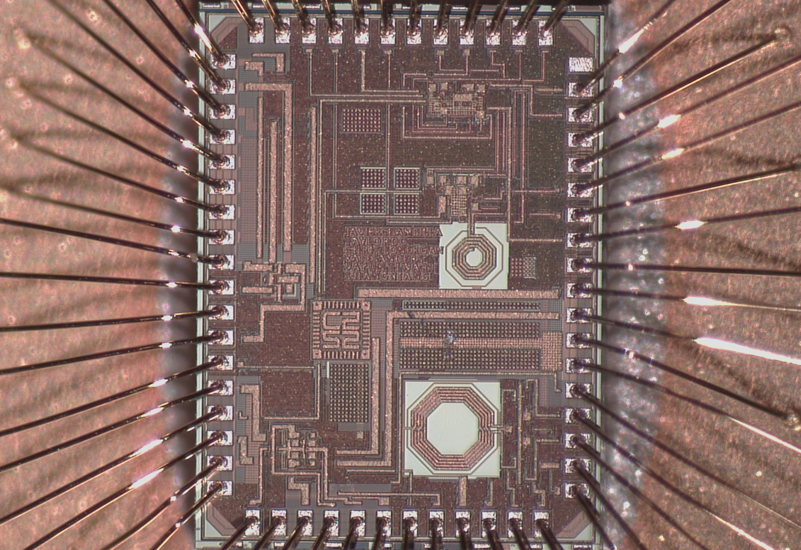

C2S2: 2.4GHz OOK Power Amplifier on TSMC180

Project Description
I designed and taped out a low power 2.4GHz Power Amplifier for C2S2's RFIC subteam. The PA is a pseudo-differential class F topology, achieving an extracted 44% power added efficiency (PAE). This PA is on a complete 2.4GHz transciever that the team taped out in June 2026. The transceiver is currently targeting On-Off keying (OOK), but the PA is planned to be used for a later GFSK constant envelope transceiver in 2027 as well. Learn more about C2S2 here: c2s2.dev